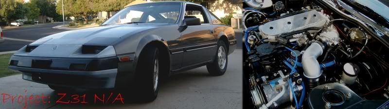

-
so ive noticed that my z over heats when im cruising around 75mph in 5th… but if i shift to 4th.. it cools off untill i go back to 5th.. i just went through an hour and a half or 1st gear, clutching riding, bumper to bumper traffic for 6 1/2 miles and it stayed cool.. i know it needs a coolant flush and probably a thermostat but that doesnt explain it only over heating in 5th?
input goes here.. lol thanks guys
-
Clogged radiator.1985 300ZX N/A -- Schneider Racing Cams + Valve Springs - U/R Underdrive Pulley - Ported/Polished Heads -
MSA Headers - MGP Intake Manifold - K&N Air Filter - Electric Cooling Fan -
 -
check for plastic bag plastered to radiator. or mud, bugs etc.. beware driving over plastic grocery bags i've seen them get caught on drive shaft (was a fluke happened to a buddy of mine but..) wrap around differential input and then melt/burn the oil seal out in matter of few miles when he got home and smelled burnt gear oil i helped him fix, had minor damage to bearings, very hot pumpkin, and one hell of a time chipping melted/burned rubber and plastic from seal area without damaging housing so we could install new seal. -
No I doubt its an airflow issue… If it was, dropping speed would only exacerbate the problem. Its definitely a water flow through the radiator issue. Thats why dropping the gear and spinning the water pump faster is helping his overheating problem.mylittlez wrote: check for plastic bag plastered to radiator. or mud, bugs etc.. beware driving over plastic grocery bags i've seen them get caught on drive shaft (was a fluke happened to a buddy of mine but..) wrap around differential input and then melt/burn the oil seal out in matter of few miles when he got home and smelled burnt gear oil i helped him fix, had minor damage to bearings, very hot pumpkin, and one hell of a time chipping melted/burned rubber and plastic from seal area without damaging housing so we could install new seal.1985 300ZX N/A -- Schneider Racing Cams + Valve Springs - U/R Underdrive Pulley - Ported/Polished Heads -
MSA Headers - MGP Intake Manifold - K&N Air Filter - Electric Cooling Fan -
-
i subscribe to Keep It Simple will take 7 seconds to look for blockage easy to check easy to move on to next possibility. down shift also speeds up fan assuming belt driven since no word of electric. will take much PIA to have radiator flow tested. too many people automatically assume it is huge issue when can be very simple if you just start at the beginning instead of jumping into the middle. -
True, I am always an advocate of moving from simplest to hardest when troubleshooting too. And you're right, increasing the RPM also makes the fan move faster, but at 75mph you have more air flowing through the radiator than the fan could ever move anyway…mylittlez wrote: i subscribe to Keep It Simple will take 7 seconds to look for blockage easy to check easy to move on to next possibility. down shift also speeds up fan assuming belt driven since no word of electric. will take much PIA to have radiator flow tested. too many people automatically assume it is huge issue when can be very simple if you just start at the beginning instead of jumping into the middle.1985 300ZX N/A -- Schneider Racing Cams + Valve Springs - U/R Underdrive Pulley - Ported/Polished Heads -
MSA Headers - MGP Intake Manifold - K&N Air Filter - Electric Cooling Fan -
-
Ok, heres a simple way to rule that out. If theres a blockage, the fan can't pull air through anyways. And as phx said, theres more air flowing through at 75 than the fan is capable of moving, so the fan spinning faster won't help shit.mylittlez wrote: i subscribe to Keep It Simple will take 7 seconds to look for blockage easy to check easy to move on to next possibility. down shift also speeds up fan assuming belt driven since no word of electric. will take much PIA to have radiator flow tested. too many people automatically assume it is huge issue when can be very simple if you just start at the beginning instead of jumping into the middle.- VG30DET (HE341) 86 300ZX - 1982 280ZX Turbo - Headered NA 1986 300ZX 2+2 - 2000 Xterra - -
check initial timing, it will overheat under low load on the highway with large amounts of initial timing. 4th gear has a higher load therefor the ECU does not add as much timing under cruise.Nearly all men can stand adversity, but if you want to test a mans character make him a moderator. -
thanks for the quick replys guys. im going to pull the rad. later today and do what i can to flush it without paying for it. if its something i can do myself, why pay?.
what do you guys suggest i do?
also. by initial timing you mean, the harmonic balancer and all that good stuff right? not the ignition timing? -
also check the waterpump."If your car cant do a burnout from a 60mph rolling start, then your engine needs more work."
"Nitrous doesn't blow up motors; Idiots with nitrous blow up motors."
Shooting for 500whp

-
I remember when my car was doin that i went crazy changing themostat,waterpump, etc even put on a used radiator that i had from my old car and still nothing changed. i took it to a radiator shop and they said the radiator was cloged so i put a new radiator on and hasnt overheated since. it use to only over heat on the highway when i was crusing but once i would get on it or just sit at idle it would be fine -
Why on earth would you bother removing the radiator when all you would need to do is remove the upper and lower hoses and flush it out that way?2slick85z31 wrote: thanks for the quick replys guys. im going to pull the rad. later today and do what i can to flush it without paying for it. if its something i can do myself, why pay?.
what do you guys suggest i do?
also. by initial timing you mean, the harmonic balancer and all that good stuff right? not the ignition timing?1985 300ZX N/A -- Schneider Racing Cams + Valve Springs - U/R Underdrive Pulley - Ported/Polished Heads -
MSA Headers - MGP Intake Manifold - K&N Air Filter - Electric Cooling Fan -
-
Roger roger…phxZ31 wrote: Why on earth would you bother removing the radiator when all you would need to do is remove the upper and lower hoses and flush it out that way?
If a person is going to go through the relative pain of removing the radiator you might as well just replace the thing while it's out and be done. Then you KNOW there isn't a problem.
Additionally, a "home flush" will be luck of the draw at best. After 20+ years if it's clogged there is a good chance it will stay that way in spite of a person's best efforts.
PT- Visit my Z31 Cardomain pages -|- Visit my website! / 73, de AE5NW -

The phrase "It's just the Internet" is not an excuse to be an illiterate dolt. -
^^
Agreed. If you remove the radiator, don't even bother flushing or testing it. Just replace it.
If you want to flush it out, drain coolant from the car, fill it up with water and cooling system flush, and let it idle for a few hours (unless it overheats). Then drain it out, disconnect the radiator hoses, and connect a garden hose to the upper radiator hose and seal it with wet rag. Then turn on the hose on and flush it out. You can also remove the thermostat and do the same to the block.
Its probably not a bad idea to try a flush first since its relatively cheap, but don't expect much as SnooZn says. Probably better to buy a new radiator.
Oh, and don't do something really stupid and put the new radiator in and THEN run a flushing fluid through the engine. That will just remove any chunks out of the block and clog up the new radiator.1985 300ZX N/A -- Schneider Racing Cams + Valve Springs - U/R Underdrive Pulley - Ported/Polished Heads -
MSA Headers - MGP Intake Manifold - K&N Air Filter - Electric Cooling Fan -
-
Could be possible that you don't have a thermostat at all in the thermostat housing.
My Z did the exact same things as you mentioned. I drove my Z through the scorching summer heat in bumper to bumper traffic. Never got hot. Beat on it a few times for a few minutes at a time, never got hot. Went home to Alabama to get the car registered there and all hell broke loose on the interstate. Made it all the way to I-10, and about 40 miles east of Tallahassee heading west. Was travelling 85 mph for about 30 minutes straight with a Viper tagging along behind me. Had the tops off and windows down with AC off. Then the temp started to rise and BOOM, the upper radiator hose exploded at the connecter piece at the core support. My passenger and I got scalded by super heated coolant spraying out from the gap between the hood and bumper, not to mention the Viper got sprayed too! Later towed car to Alabama (expensive) and did a complete disassembly of the cooling system. Decided to change the thermostat while I was changing all the hoses and had the radiator out to be cleaned. I discovered there was no thermostat in the housing.
So my uncle and I came to the conclusion that under high speed driving, it was putting a strain on the motor building heat. And with no thermostat to slow the water down to be properly cooled in the radiator, the radiator could not effectively do its job as the water pump was pushing the water through the radiator to fast to be cooled properly. This resulted in the gradual rise of the coolant temps until the pressure was so great that the weakest link failed, in my case the upper radiator hose.
1986 300ZX Turbo…sold
1990 Skyline GT-R…new money pit
2014 Juke Nismo RS 6-speed…daily

Copyright © 2006–. All rights reserved. Privacy Policy